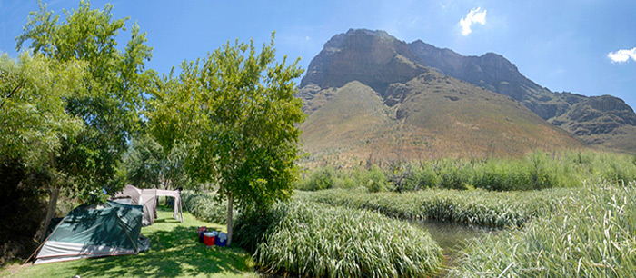

On the cusp of the Overberg, Dwarsberg Trout Hideaway lies snug on the banks of the Holsloot River, 15km south of Rawsonville. Each campsite is private, with its own stretch of lush green lawn and private ablutions. There’s trout in the river and hiking and mountain biking trails in the vicinity. For sport events that you just can’t miss, ask in advance for access to the big screen and DStv.
Camping
The wilderness holds answers to questions we have not yet learned to ask.
Spend the night or the weekend camping under the stars at one of these camping spots:
-
Dwarsberg Trout Hideaway, Rawsonville
-
Oewerzicht, Greyton
Sunset on the Langeberg is one of the most beautiful sights in South Africa, and Oewerzicht is a wonderful place to enjoy it. Apart from the stunning scenery, there’s also fishing and canoeing in the Riviersonderend River which gurgles right past the campground, plus hiking and mountain biking through the surrounding farmland. The ablutions are modern and first class and if you need supplies, the charming town of Greyton is just down the road.